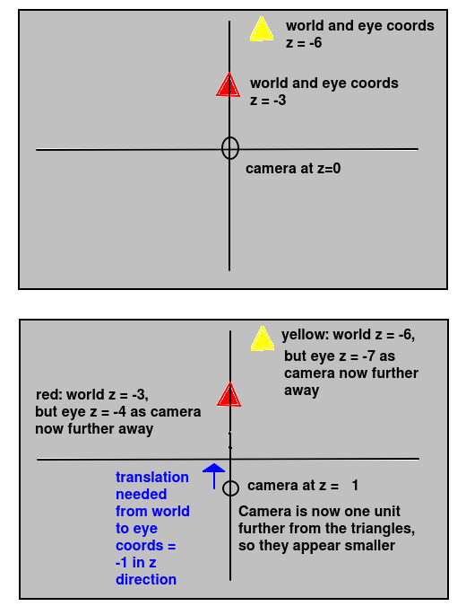

Today we will continue to look at OpenGL by examining matrix transformations in more detail, and look at the view and projection matrices and how we can send them to the shader.
As we saw last week, a matrix is a "grid" of numbers representing a particular transformation in 2D or 3D space. Matrices can be applied to coordinates (defining shapes, for example) to change (transform) them in some way. These transformations include translations (moving a shape around the world), scaling (making a shape bigger or smaller in one or more axes), or rotations (rotating an object around the x, y or z axis). In the case of OpenGL, we are mostly interested in translations and rotations. Here is an example of a 3x3 matrix:
[1 0 0] [0 1 0] [0 0 1]
When applying matrices to points, we typically represent the points in vector form, so a point (x,y,z) would become:
[x] [y] [z]
There is a predefined formula for multiplying a vector by a matrix to produce an output vector, which is:
[a b c] [x] [ax + by + cz] [d e f] * [y] = [dx + ey + fz] [g h i] [z] [gx + hy + iz]Note how we multiply the rows by the columns. So the first component (x component) of the output vector will be the result of multiplying each term in the first row of the matrix with the corresponding term in the vector, and then summing them together. The second component (y component) of the output vector will be the result of multiplying each term in the second row of the matrix with the corresponding term in the vector, and summing them together. And the third component (z component) of the output vector will be the result of multiplying each term in the third row of the matrix with the corresponding term of the vector, and summing them together.
1 values along the main diagonal from top left to bottom right, and zeros elsewhere. We can show that the identity matrix has no effect from the above equation, as a=1, e=1, i=1 and all other values in the matrix are 0:
[1 0 0] [x] [1x + 0y + 0z] [x] [0 1 0] * [y] = [0x + 1y + 0z] = [y] [0 0 1] [z] [0x + 0y + 1z] [z]
What effect will these matrices have on a point (x,y,z) ?
[2 0 0] [0 2 0] [0 0 2]
[3 0 0] [0 1 0] [0 0 1]
To perform a transformation on a shape using a matrix, you have to multiply each point in the shape by the matrix, using the multiplication technique shown above.
The same principle involves multiplying two matrices together, for example two 3x3 matrices. This produces an output matrix. This allows us to use a single matrix to apply two transformations in one go. If two matrices representing different transformations are multiplied, the resulting matrix performs both operations in one step.
Here is an example of 3x3 matrix multiplication (note lower-case and upper-case letters represent different values). It's an extension of the same principle as multiplying a matrix and a vector.
[a b c] [A B C] [aA+bD+cG aB+bE+cH aC+bF+cI] [d e f] [D E F] = [dA+eD+fG dB+eE+fH dC+eF+fI] [g h i] [G H I] [gA+hD+iG gB+hE+iH gC+hF+iI]The value at position
(row, col) of the output matrix consists of each value of row row from the first matrix multiplied by the corresponding value of column col from the second matrix and summed together. So, for example:
(row=0,col=0) in the output matrix consists of each value of row 0 from the first matrix multiplied by the corresponding value of column 0 from the second matrix and summed together.(row=0,col=1) in the output matrix consists of each value of row 0 from the first matrix multiplied by the corresponding value of column 1 from the second matrix and summed together.(row=1,col=0) in the output matrix consists of each value of row 1 from the first matrix multiplied by the corresponding value of column 0 from the second matrix and summed together.(row=1,col=2) in the output matrix consists of each value of row 1 from the first matrix multiplied by the corresponding value of column 2 from the second matrix and summed together.Hopefully you can work out from the above that in matrix multiplication, the order of multiplication matters. So A*B is not the same as B*A. The result of multiplying the two matrices above in the reverse order would be different:
[A B C] [a b c] [Aa+Bd+Cg Ab+Be+Ch Ac+Bf+Ci] [D E F] [d e f] = [Da+Ed+Fg Db+Ee+Fh Dc+Ef+Fi] [G H I] [g h i] [Ga+Hd+Ig Gb+He+Ih Gc+Hf+Ii]
See here. This is 2D only, but allows you to experiment with applying matrices to a 2D shape on a graph to see what effect it has. Note that the example stores a current matrix, which is the product of all previous matrices, i.e. it is multiplied by each new matrix entered. So a transformation will be combined with the previous transformation, unless you click the "Reset Matrix" button. This resets the current matrix to the identity matrix.
These are 2D examples.
[0 -1] [1 0]
[ 0 1] [-1 0]
This swaps the x and y coordinates.
[0 1] [1 0]
In OpenGL we are particularly interested in rotation and translation so we will look at these now.
In 2D, i.e. a graph with x and y axes only, the rotation about a given angle A (anticlockwise) is given by:
[cos A -sin A] [sin A cos A]
[1 0 0 ] [0 cos A -sin A] [0 sin A cos A]
[cos A 0 sin A] [0 1 0 ] [-sin A 0 cos A]
[cos A -sin A 0 ] [sin A cos A 0 ] [0 0 1 ]
In 3D graphics it's commonplace to use 4x4 matrices rather than 3x3. The reason why this is, is that they allow you to combine the translation and rotation into a single matrix.
For example remember that the standard matrix for rotating about the y axis anticlockwise by a given angle A is:[cos A 0 sin A] [0 1 0] [-sin A 0 cos A]
dx in the x direction, dy in the y direction, and dz in the z direction as:
[dx] [dy] [dz]
[1 0 0 dx] [0 1 0 dy] [0 0 1 dz]
[3] [4] [5]
To deal with this, we pad out the matrix with an additional line of zeros and ones which will have no impact on the result:
[1 0 0 dx] [0 1 0 dy] [0 0 1 dz] [0 0 0 1]
[3] [4] [5] [1]
We can similarly pad out our rotation matrix with zeros and ones which will have no impact on the result, in order to make it a 4x4 matrix and thus make it able to be multiplied with the translation matrix:
[cos A 0 sin A 0 ] [0 1 0 0 ] [-sin A 0 cos A 0 ] [0 0 0 1 ]
[cos A 0 sin A dz] [0 1 0 dy] [-sin A 0 cos A -dx] [0 0 0 1 ]
We saw last week that the view matrix represents the transformation from world to eye coordinates, and consists of both a translation and a rotation component. Therefore, the view matrix is actually a 4x4 matrix, of the form discussed above.
We saw last week that the vertex shader is responsible for transforming world coordinates to eye coordinates using the view matrix. How do we manage this in code? We need to define a 16-member float array (4 rows * 4 columns) in our Kotlin, and then send it to the shader using a similar technique to last week. The view matrix on the shader is a uniform variable, because it stays the same for all vertices for the current rendering frame of our 3D scene. However, each time the scene changes (e.g. when it is rotated, or when the user changes position) we will need to update the matrix.
How do we do this? We typically use a variable within Kotlin to store the view matrix and update this matrix within Kotlin in response to user interaction (such as the user moving through the 3D world or rotating the field of view). Then, we send it to the vertex shader so that next time the scene is rendered, the new matrix will be used. Here is the detail on how to do this.
Your Renderer class needs to contain a float array containing the view matrix, e.g.:
class MyRenderer: GLSurfaceView.Renderer {
val viewMatrix = FloatArray(16)
We will look at a vertex shader which actually transforms the vertices by the view matrix.
attribute vec4 aVertex;
uniform mat4 uView;
void main(void)
{
gl_Position = uView*aVertex;
}
Note how in this vertex shader we calculate the vertex position
on-screen (eye coordinates) by multiplying the input vertex position
(world coordinates; from the data model) by the view
matrix. We need to convert the input vertex position from
a 3-element to a 4-element vector due to the view matrix being a 4x4 matrix.
With matrix multiplication (we are treating the vector as a 4x1 matrix), the number of rows of the first matrix must be equal to the number of columns of
the second.
ref_uViewMatrix = GLES20.glGetUniformLocation(shaderProgram,"uView")
GLES20.glUniformMatrix4fv (ref_uViewMatrix, 1, false, viewMatrix, 0);. The most interesting arguments are the 1st (the reference to the shader variable) and the 4th (the matrix we want to send). (The others are less important: the second parameter (1)=one matrix being sent; the third parameter (false)=matrix isn't transposed; the final parameter (0)=offset into array of matrix data. These rarely change).
We have come across the view matrix already. However, we also need to use the projection matrix to apply perspective effects (making nearby objects look larger than further-away objects and giving a sense of depth). To do this, we must define the viewing frustum.
To calculate the projection matrix, you need to define the current visible area of the world with four parameters:
To use the projection matrix, you need to:
Renderer to hold it, e.g:
val projectionMatrix = FloatArray(16)
attribute vec4 aVertex;
uniform mat4 uView, uProjection;
void main (void) {
gl_Position = uProjection * uView * aVertex;
}
onSurfaceChanged() method to calculate the projection matrix each time the dimensions of the GLSurfaceView change.
override fun onSurfaceChanged(unused: GL10, w: Int, h: Int) {
GLES20.glViewport(0, 0, w, h)
val hfov = 60.0f
val aspect : Float = w.toFloat()/h
Matrix.perspectiveM(projectionMatrix, 0, hfov/aspect, aspect, 0.001f, 100f)
}
How is this working?
GLES20.glViewport() to ensure the OpenGL viewport matches the screen size.Matrix.perspectiveM() to set the perspective.
The arguments are:
ref_uProjMatrix = GLES20.glGetUniformLocation(shaderProgram,"uProjection") GLES20.glUniformMatrix4fv (ref_uProjMatrix, 1, false, projectionMatrix, 0)
Start with this repository:
https://github.com/nwcourses/OpenGL01This is a solution to last week's work, but with an enhanced GUI containing buttons allowing you to move the camera around. This will be used for a later exercise.
val viewMatrix = FloatArray(16) val projectionMatrix = FloatArray(16)In the
onDrawFrame(), initialise the view matrix to an identity matrix, so that initially it has no effect, e.g:
Matrix.setIdentityM(viewMatrix, 0)The 0 is the offset of the matrix into the array.
onSurfaceChanged() method like the example above, to setup the projection matrix.onViewCreated(), create a float array containing vertices for two triangles:
onDrawFrame().onDrawFrame(), and before you draw the shapes, try sending an altered view matrix to the shader. Initialise your view matrix to the identity matrix first (to ensure you blank out the previous one) and then use the API call
Matrix.translateM() to translate the view matrix -1 in the z direction relative to its previous state:
Matrix.translateM(view, 0, 0, 0, -1);The arguments: the matrix; 0=offset into the array (as before); 0=translation in x direction, 0=translation in y direction; -1=translation in z direction.
[1 0 0 0] [0 1 0 0] [0 0 1 0] [0 0 0 1]
translateM() will be to convert it to:
[1 0 0 0] [0 1 0 0] [0 0 1 -1] [0 0 0 1]
z translations, between -2 and +2, see what effect it has, and try to explain your observations. We will go over this in class.Now we have completed this week, I have added a discussion on this. You will note that setting the z translation to -1 makes the triangles appear smaller. Why is this? The diagram below helps explain it:

The -1 does not define the z coordinate of the camera. It defines the translation needed to convert world to eye coordinates. If this translation is -1, it means that the z coordinate of the camera must be +1. This is because, by definition, the camera is at the origin in eye coordinates. So the translation required to translate the camera from a world z coordinate of cz to zero must always be -cz. Or, looking at it the other way round, the world coordinate of the camera for a given world to eye translation of dz will be -dz. So here, if the translation dz is -1, the z coordinate of the camera must be +1. (The same principles also apply in the x and y directions).
You can also see from the diagram above that, when we move the camera to a z of +1, the distance to the two triangles increases by one unit (as they both have negative z coordinates) so the eye z coordinates of each will become one unit more negative (-3 to -4 and -6 to -7 for the red and yellow triangle respectively).
A common application of OpenGL is a 3D game or virtual reality application where the player can move around. These applications have the concept of a camera, as we saw last week. For example, a player in a game might be standing at the position x=100, y=0, z=100 and facing along the x axis. How can we develop this sort of application in OpenGL?
In this sort of application, all the objects in the world - as well as the camera - need to be stored in world coordinates. We then define a view matrix to transform the world coordinates to eye coordinates based on the position of the camera. We will need a cameraPos variable to represent the current camera position in x, y and z coordinates, i.e.:
val cameraPos = FloatArray(3)
Try answering this question. If the camera position is at x=0, y=0, z=100 in world coordinates, and facing towards negative z, what translation do we need to do (expressed as a translation vector) to transform our world coordinates into eye coordinates for that position? (Think about your observations in the final question of Exercise 1).
Enhance the app, so that it allows the user to move the camera one unit in the x, y and z directions, either positive or negative. Use the 6 buttons on your UI (provided by the code in the repository) to do this. You will need to:
cameraPos, as shown above.onDrawFrame() is called, the view matrix is re-initialised to an identity matrix. This is to ensure that, when the matrix is translated with Matrix.translateM(), it is relative to the identity matrix and not relative to its previous value.cameraPos float array accordinglyonDrawFrame(), after initialising the view matrix as an identity matrix, use the camera position to set the view matrix appropriately using Matrix.translateM(). (How would you do this?)